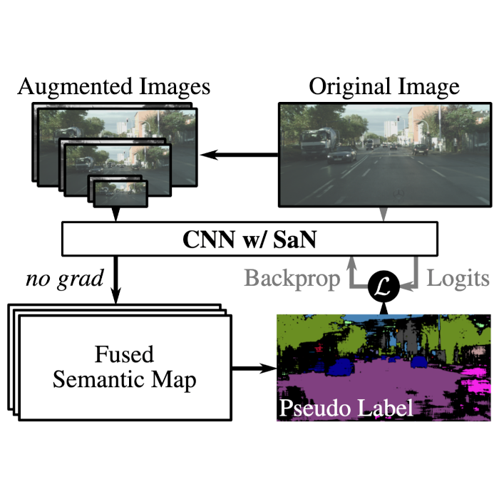

|
I am a PhD student in computer vision at the Visual Inference Lab in Technical University of Darmstadt. Supervised by Prof. Stefan Roth my research focuses on visual scene understanding with limited supervision. I received a master's degree in Computational Engineering with a focus on deep learning and computer vision. At the Visual Inference Lab I conducted research on multimodal learning as well as on semantic scene understanding with limited supervision, advised by Shweta Mahajan, Nikita Araslanov and Prof. Stefan Roth. Previously, I obtained a master's degree in Mechanical Engineering with a focus on mechatronics from TU Darmstadt. My research on multi-objective optimization of electrical machines resulted in a patented new type of linear actuator. Email | CV | Twitter | Google Scholar | Github |
{kind=link}
|
Jul 23 Our paper "Semantic Self-adaptation: Enhancing Generalization with a Single Sample" got accepted at TMLR!
|
|
I am interested in machine learning and computer vision, especially visual scene understanding with limited supervision. |

|
Sherwin Bahmani*, Oliver Hahn*, Eduard Zamfir*, Nikita Araslanov, Daniel Cremers and Stefan Roth TMLR July 2023 Paper | Code |
|  |
Sherwin Bahmani*, Oliver Hahn*, Eduard Zamfir*, Nikita Araslanov, Daniel Cremers and Stefan Roth ECCV OOD-CV Workshop |
|
Website source code by Jon Barron. |